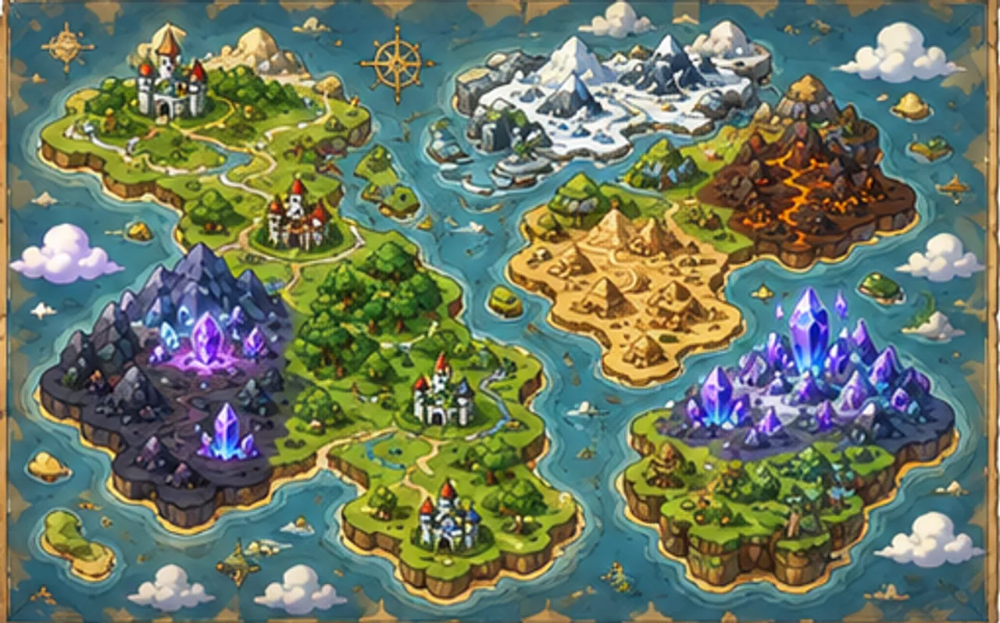
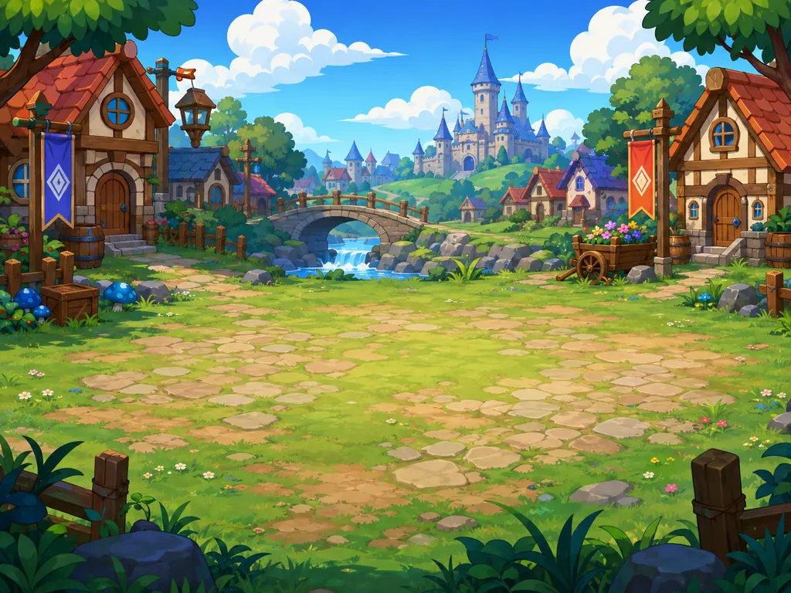
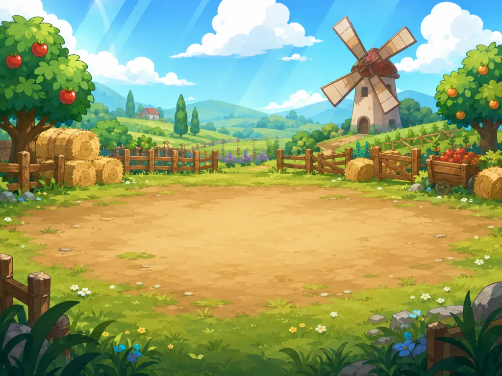
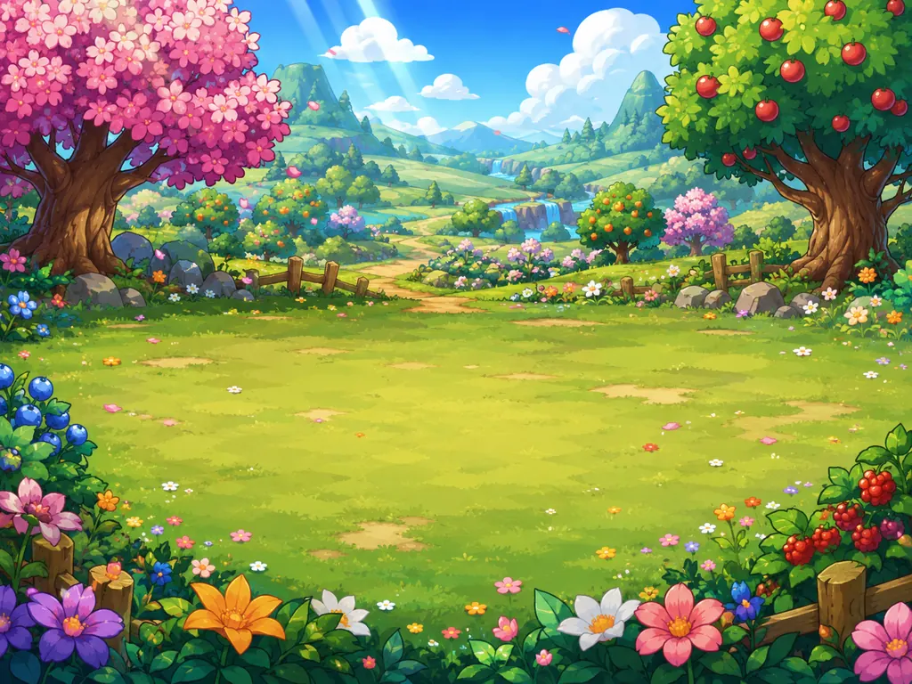
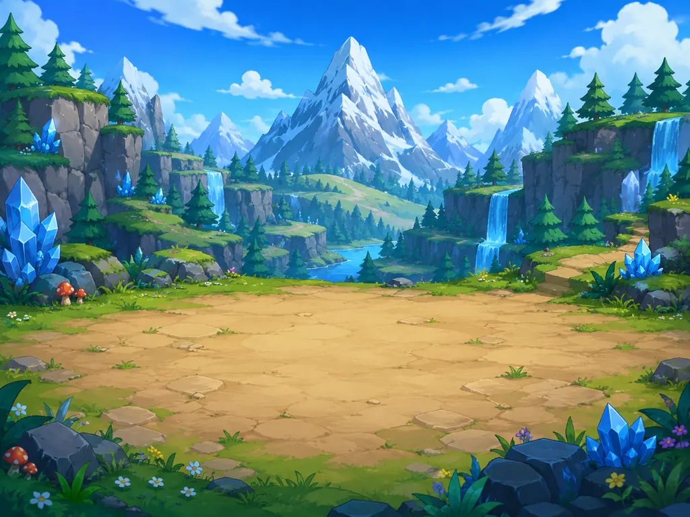
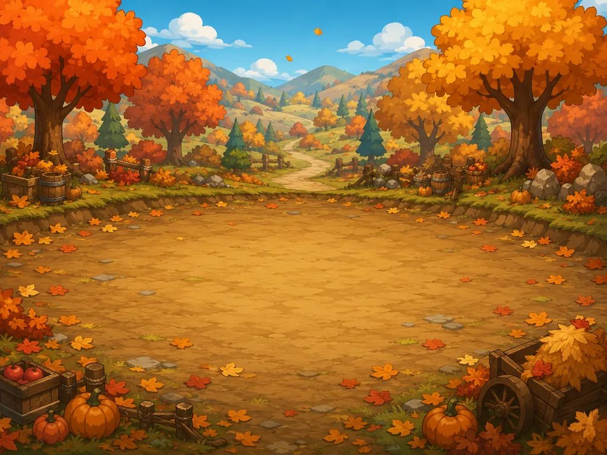
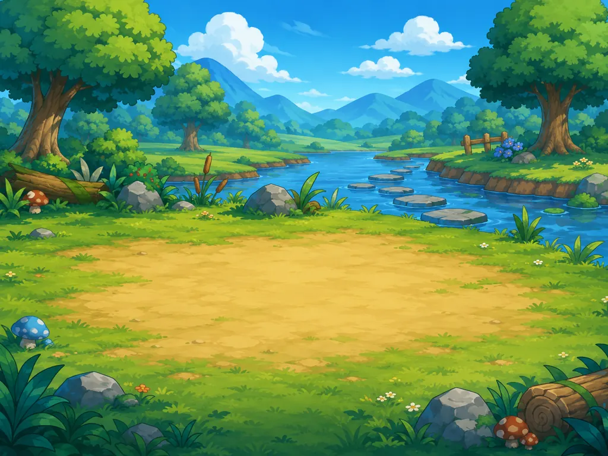
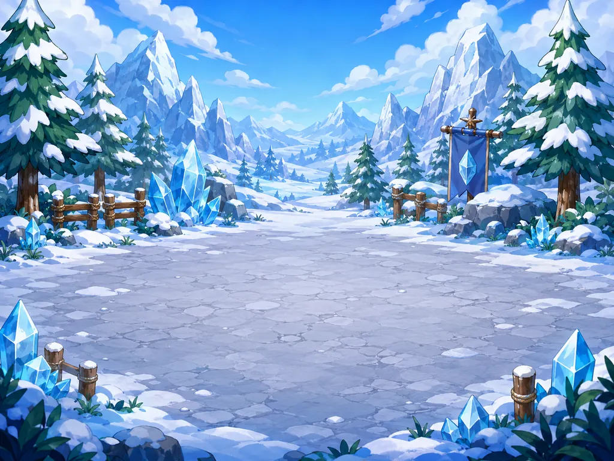
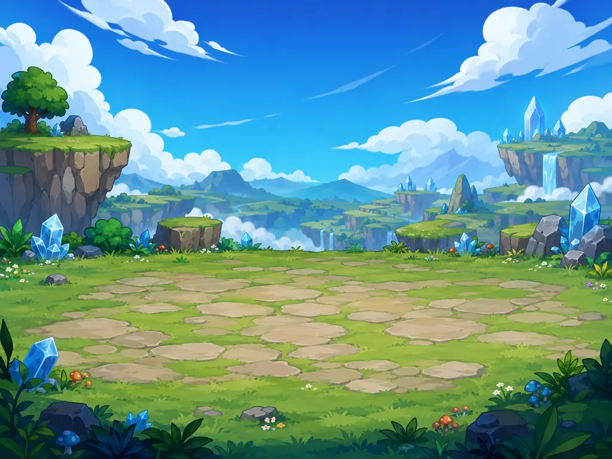

Super Sean
Crystal sword hero with courage skills, guardian blocks and Friendship Bursts. Brave, funny and always one step from touching the suspicious glowing button.
Free cozy JRPG · play instantly in your browser
Quest through eleven magical regions with Sean, Dave, Petroman, Haraku and Ruush. Battle Xelar the Bald Wizard, gather wood, stone and crystals, craft legendary gear — then claim a homestead and build your own cottage, castle and gardens.

ONE HERO · TWO WORLDS
Every adventure starts here. Pick your world — the gem-lit realms of Asteria-007, or a snow-buried park back home in Maple Hollow.
A cozy JRPG across 11 regions: party battles, crafting, homestead building, mounts, the Champion's Circuit arena — and Xelar the Bald Wizard waiting at the top of his tower.
▶ Play the RPG below NEW · WINTER SPIN-OFFA 3D 12-vs-12 capture-the-flag battle in a destructible winter park. Eight power-ups, squad AI, a frozen lake and one extremely confused dog.
❄ Enter the snow park →No download · saves in your browser
Explore villages, meadows, caves, forests, shrines and ruins. Talk, quest and fight — then harvest trees, mine crystals, cook stews, forge swords, plant berry gardens and raise your dream base at the Sunrise Homestead.
Loading Asteria-007…
Story and lore
On the morning of Sean’s seventh birthday, Birthday Village glows with lanterns, cakes and crystal music. The village crystal, a relic older than any map, begins to pulse when Sean receives the Crystal Sword. For one perfect moment, every bell in the valley rings by itself.
Then the sky turns silver. Xelar the Bald Wizard descends through a moon-shaped rift, steals the first Gem fragment and curses the crystal. Haraku senses the location of the Moon Shrine and is marked by Xelar’s shadow. Sean, Dave, Petroman and Ruush must gather the Seven Gems before the Bald Moon Tower awakens.
Between battles, the valley needs a guardian who stays. The Elder grants Sean the deed to the old Sunrise Homestead — rich soil, open sky and a crystal humming with welcome. What you build there is up to you.
Recruit them all on your journey
Every friend you recruit fights beside you with a unique battle skill — and hangs out at your homestead between adventures.
Crystal sword hero with courage skills, guardian blocks and Friendship Bursts. Brave, funny and always one step from touching the suspicious glowing button.

Gadget strategist and practical best friend. His Gadget Zap stuns enemies cold, and he tinkers up charms at your homestead workbench.

Machine-whisperer of Petro Plains. His Iron Guard halves incoming damage. Solves most ancient puzzles by asking, “Can I punch it?”

Mystic keeper of the Moon Shrine. Share a cup of Moon Tea to earn her trust — her Moon Blessing heals the party in battle.

Wind-fast forest scout. His Twin Arrows strike twice in a blink, and no treasure in Ruushwood escapes his eyes.

The evil bald wizard, cosmic show-off and architect of the Bald Moon Tower. Wants to drain the Seven Gems and crown himself emperor of every known star.
Eleven regions to explore
Each region has its own monsters, boss, treasures and rare materials. What you gather out there becomes what you build back home.

Your cozy hub: Elder Brightbeard’s quests, Grandma Berrybun’s bakery, Bobo’s trading post and the village crystal.
Your claimable base south of the village. Build, garden, craft and expand the claim all the way to the valley edges.
Gentle fields of slime sprouts and mischievous mushrooms. Chop trees, pick flowers and face Moldor the Mushroom Grump.
A glowing cavern of crystal clusters and ore veins — the best mining spot in the valley, guarded by crystal spiders.
Machine-strewn plains of sleeping engines. Salvage gear parts, wake the generator and recruit Petroman.
A deep wind-forest of great pines and racing shadows. Ruush waits within — and so does the Elder Treeguard.
A moonlit temple where herbs bloom at midnight. Brew Moon Tea for Haraku and banish the Lunar Shade.
The collapsed capital of the Gem Guardians — and above it, Xelar’s fortress, where the final battle awaits.
An icy postgame route beyond Xelar’s tower, filled with elite demons, rare ore and the Void Succubus Queen.
A warm postgame shore of relics and sea creatures, ending with the Tide Spirit Sovereign.
Gather · craft · build · grow
Super Sean 007 blends JRPG questing with the joy of building. Everything is made from real materials you harvest in the world — no two homesteads look alike.
Chop trees, mine boulders and crystal clusters, salvage gear from old machines, pick moon herbs and relics. Nodes respawn, monsters drop spoils.
Refine planks and bricks, cook stews and Moon Tea, forge the Crystal Sword +1, Gear Blade and Starfall Edge. Equip weapon, armor and charm.
40+ build pieces across floors, walls, roofs, fences, water and decor — or stamp full blueprints: Cozy Cottage, Stone Keep, Garden Patch, Orchard, Star Shrine.
Till soil, plant berry, flower and moonfruit seeds, and harvest real ingredients. Crops keep growing even while you’re off adventuring.
Every piece adds Comfort. Reach thresholds for bonus XP, shop discounts, a stat aura and a daily gift chest at your Homestead Crystal.
Workbench, Kitchen, Crystal Forge, Storage and a Dream Bed that fully restores your party. Your base is your strongest piece of gear.
Fictional world history
Long before Birthday Village had a name, Asteria-007 was a wandering star-garden drifting between seven cosmic rivers. The first magical creatures were the Gemkin: tiny crystal spirits who sang color into stone, water, trees and dreams. Where they sang longest, forests learned to glow, caves grew blue crystals, and moonflowers opened even during the day.
The Gemkin eventually met the Hearthfolk, small village-builders who loved festivals, recipes and impossible bridges. Together they formed the First Circle and forged the Seven Gems to keep the world balanced. Each Gem held a virtue, not as an abstract idea, but as real energy. Courage could turn fear into light. Friendship could link hearts across distance. Wonder could open doors no map could show. Wisdom could translate the language of ruins. Laughter could break curses. Hope could restore broken lands. Balance could keep all powers from consuming one another.
The age of heroes began when the Star Beasts arrived: cloud lions, moon deer, mushroom dragons, lantern fish and sleepy stone turtles large enough to carry villages on their backs. Most became allies. Some became guardians. A few became monsters after touching raw shadow between the stars.
Xelar was once a student of the Moon Library, a brilliant wizard who could fold space into mirrors. But he became obsessed with being remembered as the greatest sorcerer in history. When the library elders told him magic served life rather than vanity, he shaved his head in dramatic protest, declared baldness the perfect shape of destiny and vanished into the Dark Orbit.
Centuries later, Xelar returned with the Bald Moon Tower, a machine that could drain virtue from the Gems and convert it into obedience. His first conquest failed when the Gem Guardians sealed the tower beyond the clouds, but the seal weakened over generations. Now Xelar has found a crack in the sky, and only Super Sean’s awakened Crystal Sword can restore the ancient promise.
And the Hearthfolk say something else: the valley remembers every hero who built a home in it. Raise your walls, light your lamps, plant your gardens — Asteria-007 grows stronger with every stone you lay.
A full campaign
The main story carries you across every region — and your homestead is part of the legend, with building chapters woven right into the campaign.
Game systems
Eleven hand-built regions with NPCs, chests, portals, secret notes and respawning resource nodes.
Turn-based combat with Sean’s skills plus one unique move per recruited friend — stuns, shields, volleys and heals.
19 recipes from Berry Juice to the Relic Crown. Weapon, armor and charm slots that genuinely change your stats.
Claim, build, expand. Full material refunds when you remodel, so experimenting is always free.
Real-time crops that grow while you quest — berries, flowers and moonfruit feed your kitchen and forge.
Over 20 monster types across the regions, plus 8 unique bosses guarding the Gems.
XP, level-ups, HP/MP growth and a Friendship meter that unleashes devastating burst attacks.
Completely free. Ads sit around natural breaks; optional reward chests and revives give bonus perks.
Beginner's guide
Everything a new hero needs for a strong start in Asteria-007.
Talk to Elder Brightbeard by the north hall, then find Dave on the plaza — he joins your party with his enemy-stunning Gadget Zap. Open the village chest for free supplies.
Walk up to any tree, boulder, mushroom or berry hedge and press E a few times. Materials go straight to your bag, and nodes regrow after a minute. Monsters drop materials too.
Defeat 3 Slime Sprouts in Mushroom Meadow, then challenge Moldor the Mushroom Grump in the northeast. Victory earns the Meadow Gem and your homestead deed.
Take the south path from the village and touch the Homestead Crystal. Press B to build, V for blueprints — craft Planks from Wood with C and your Cozy Cottage is minutes away.
Place Tilled Soil from the Garden palette, craft a Berry Seed from any berry, and press E on the soil to plant. Ripe crops feed your kitchen — Mushroom Stew heals 120 HP.
Build a Forge to craft the Crystal Sword +1 (3 Crystal Shards + 2 Planks), equip it in your bag, and take the north cave path. Four more friends and six more Gems await.
Postcards from the world
Battle backdrops and vistas you’ll encounter on the road to the Bald Moon Tower.








Join the adventure
Team up in co-op, show off your homestead, and help Super Sean 007 grow.
Send Super Sean 007 to a friend — one tap to share the link anywhere.
Host a game and give friends a 6-letter code to join as Dave, Ruush, Haraku or Petroman.
Read dated release notes, new-region details and production improvements.
FAQ
Yes. Super Sean 007 is completely free to play in your browser. The site is supported by non-intrusive ads placed around natural breaks in the page and game flow.
Defeat Moldor in Mushroom Meadow to earn the homestead deed, then touch the Homestead Crystal south of the village to claim your land. Press B to build tile by tile, or V to stamp full blueprints like the Cozy Cottage and Stone Keep. Removing pieces refunds all materials.
Yes. Gardens grow in real time, even while you explore other regions or close the tab. Come back to ripe berries, flowers and moonfruit.
No. The game is a static HTML5 Canvas app: click play and you’re in. Progress autosaves in your browser every few seconds and whenever you leave the page.
Yes, two ways: copy a save code from the title screen and paste it anywhere via Load Code, or turn on cloud sync to get a personal sync ID that restores your full adventure — level, gear, homestead and gardens — on any device.
Yes. The game runs in modern desktop, tablet and mobile browsers, with a touch D-pad and dedicated Craft/Build buttons on smaller screens.
Fifteen main chapters across eleven regions with eight boss fights, plus side quests, gear crafting, comfort perks and an open-ended building endgame.
It borrows their best loops — chop, mine, craft, build and farm — and wraps them in a story-driven JRPG with turn-based battles, recruitable heroes and a proper villain. If you love cozy building games and classic RPGs, this is both at once.
Dave joins in Birthday Village. Petroman joins when you bring him 3 Gear Parts in Petro Plains. Ruush joins after facing the Elder Treeguard in Ruushwood. Haraku joins when you brew her Moon Tea — you’ll need a Kitchen at your homestead.
Privacy, cookies and ads
Super Sean 007 is a free browser game supported by advertising. This site shows ads served by the Adsterra network across banner, native and social bar placements, and offers optional rewarded ad hooks inside the game.
Adsterra placements load automatically and may use cookies or similar technologies under the provider’s policies. Progress is stored locally in your browser by default and is uploaded to Cloudflare only when you voluntarily enable Cloud Sync.